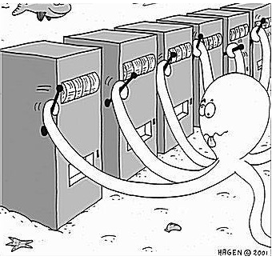
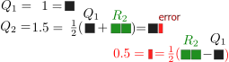
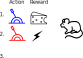

5.rl. Exploration and Exploitatin
What is RL
- 결정 하는 것을, 학습 시키는 방법에 대한 과학
- 행위자는 정책, 가치 함수 그리고/또는 모델들을 학습 할 수 있다.
- 일반적으로 시간과 결과에 대해 고려해야 한다.
- 결정은 보상, 행위자의 상태, 환경의 상태에 영향을 준다.
단순화
행위와 보상의 상관관계를 탐구하기 위해 다른 부분들을 고정 시키자.
현실
- 여러개의 상태가 있고 여러개의 행위가 있다.
- 하나의 행위가 다른 상태와 보상에 영향을 준다.
- 행위에 대한 미래는 확률적으로 주어지고 해당 확률 분포는 시간에 의해 변한다.
현실의 구성요소
- 여러개의 상태
- 여러개의 행위
- 행위가 미래에 영향을 줌
- 미래 == 보상 + 상태
- 행위에 대한 미래는 확률적으로 주어짐
- 미래의 확률 분포는 시간에 의해 변동 될 수 있음
- 상태는 시간에 의해 변경 될 수 있음
단순화
- 한 개의 상태만 생각하자.
- 상태는 한 개. 여러 개의 액션
- 과거의 행위가 미래에 영향을 주면 복잡하다.
- 비연속적 구조 == 과거의 행위가 미래에 영향을 주지 않음.
- $A_{t}$를 조건으로 주었을때 $R_{t}$ 의 확률 분포는 고정되어 있음 또한 시간과 독립적임
예제
파랑 레버와 빨강 레버가 있다.
- 첫 번째 시도에서 파랑 레버를 당기면 치즈가 나왔다.
- 두 번째 시도에서 빨강 레버를 당기면 전기 쇼크가 나왔다.
- 세 번째 시도에서 치즈을 받기 위해서는 무엇을 당겨야 할까?
탐색 vs 활용
100 곳의 음식점이 있다 10 곳의 음식점만 가보고 특정한 곳이 최고 라고 할 수 있는가?
- online 결정 문제는 기본적으로 2개의 선택이 있다.
- 탐색: 지식을 증가 시킴
- 활용: 성과를 최대화 하기 위해 기존의 지식을 이용
- 제일 좋은 장기 전략은 단기적 이익을 희생 시켜야 할 수 있다.
- 우리는 전체적으로 최적화된 결정들을 찾기 위해 정보를 모아야 한다.
One-Armed bandit
- 한 개의 레버를 가진 빠징코 기계가 있다.
- 레버를 당기면 확률적으로 특정 금액이 나온다.
- 미래는 현재에 독립적이다.
Multi-Armed bandit
상황
- 여러 개의 레버를 가진 빠징코 기계가 있다.
- 레버가 10개가 있고 레버를 당길 때 마다 특정 금액이 나온다.
- 금액은 특정 레버에 의존적이며 확률적으로 액수가 결정된다.

형식화(formalize)
- 상태는단 한 개이다.
- 여러 액션 셋을 $A$ 라고 하자.
- 행위 == $0..N$ 레버 중 한 개를 당기는 행위
- 액션셋 == {"0번 당기기",...,"N 번 당기기"}
- 각 단계에 행위자는 행위 $A_{t} \in A $를 선택한다.
- 환경은 보상 $R_{t}$를 생산한다.
- 보상은 $P(r \mid a)$ 이며 고정되어 있다. 하지만 해당 확률 분포를 알지 못한다.
- 목적은 특정 시간 동안 누적 보상을 최대화 하는것이다. $\sum_{i=1}^{t}R_{i}$
- 미래(보상)는 현재의 선택과 독립적이다.
생각 할 것
- 특정 시간 즉 100 회 동안의 누적 보상을 최대화 할려면 몇 회를 탐색에 쓰고 몇 회를 활용에 사용해야 할까?
- 지도 학습에서 평가 기준이 테스트 셋인것과는 조금 다르다. 트레이닝 과 테스트 셋이 동시에 이루어 지는 느낌.
수식화
- 누적 보상을 최대화 하기 위해서는
- 각 레버의 개별 보상 기대값을 알아야 한다.
- 탐색과 활용의 전략을 택해야 한다.
Action value - 한 개
-
한 개의 팔을 가진 빠징코 기계의 개별 보상을 기대값으로 표현해 보자.
- 해당 팔을 $a_0$ 이라고 칭하자.
- 액션을 행한 후 받는 보상이 정해 지는 함수를 q 라고 정의하자. $q: \text{action} \to \text{reward}$
- 아래는 진짜 보상 함수이며 행위자는 알지 못한다 그러므로 추측 해야 한다. $$ q(a) = \mathbb{E} [ R_{t} ] $$
-
우리는 상호작용을 통해 (샘플링) 위의 진짜 보상 함수를 추측 해야 한다.
- 평균 값을 사용해 보자. $$ Q_{t}(a) = \frac{\sum_{n=1}^{T}R_{n}}{T} $$
Action value - 여러 개
위의 식을 확장해 보자.
-
여러 개의 액션 중 한 개를 선택 함으로 조건부 확률식을 세우자.
- 진짜 q 함수 $$ q(a) = \mathbb{E} [ R_{t} \mid A_{t} = a ] $$
-
샘플링을 통한 추측
| action | totalReward | 당긴 횟수 | 평균 | 수식 |
|---|---|---|---|---|
| 0 | 8 | 2 | 4 | $Q_{t}(0) = \frac{8}{2}$ |
| 1 | 10 | 1 | 10 | $Q_{t}(1) = \frac{10}{1}$ |
- $L$ 은 조건이 True 일 경우 1 아니면 0을 리턴 하는 함수 라고 정의 하자.
- 그러면 추측 보상 함수는 아래와 같이 정의 할 수 있다.
$$ Q_{t}(a) = \frac{ \sum_{n=1}^{t}R_{n}L(A_{n}=a) }{ \sum_{n=1}^{t}L(A_{n}=a) }$$
점진적 Action value
- 평균 함수는 기존 평균 값에 변화량을 적용해 주는 방식으로 같은 결과를 받을 수 있다.

- 위의 그림은 $Q_{1} = 1$ 이고 $R_{2} = 2$ 일때
- 기존 평균 대비 변화량을 $R_{2}$, $Q_{1}$ 으로 구할 수 있음을 도식화 했다.
- $q$는 진짜 action value 이고 $Q_{t}$ 는 추측 이다.
$$ Q_{t}(A_{t}) = Q_{t-1}(A_{t}) + \alpha_{t} \left( R_{t} - Q_{t-1}(A_{t})\right) $$ $$ \alpha_{t} = \frac{1}{N_{t}(A_{t})}, N_{t}(A_{t}) = N_{t-1}(A_{t}) + 1, \text{ and }, N_{0} = 0, \forall a $$
- $\alpha$ 를 단계 사이즈라고 한다.
쥐 예제1

- 보상
- 치즈: $R = +1$
- 충격: $R = -1$
- $Q_{2}$ 에서의 action value
- $Q_{2}(\text{Red}) = -1$
- $Q_{2}(\text{Blue}) = +1$
- $Q_{3}$에서 빨강을 당겨야 할까 파랑을 당겨야 할까?
- 파랑을 당겨야 한다. 액션 값이 더 크기 때문이다.
쥐 예제2

- 보상
- 치즈: $R = +1$
- 충격: $R = -1$
- $Q_{5}$ 에서의 action value
- $Q_{5}(\text{Red}) = -1$
- $Q_{5}(\text{Blue}) = -0.75$
- $Q_{6}$에서 빨강을 당겨야 할까 파랑을 당겨야 할까?
- 이제 다른 레버를 실험해 봐야 하지 않을까?
- 언제 greedy 하게 action value 를 사용 하는걸 멈춰야 할까?
Regret
- 어떻게 탐색과 활용을 최적화 할 것인가?
- 탐색과 활용이 최적화 되었다고 할 수 있는 평가 기준이 무엇인가?
- 우리가 최적 value 값을 알고 있다면 $$ v_{*} = \underset{a \in A}{\operatorname{max}} q(a) = \underset{a}{\operatorname{max}} \mathbb{E} [ R_{t} \mid A_{t} = a ]$$
- Regret 는 특정 단일 시점에서 손실된 기회라고 정의 하자.
- 잘못된 선택으로 특정 시점에 최대로 받을 수 있는 양을 받지 못하면 나중에 우리는 후회한다.
- 해당 단계에서 얼만큼 손실을 보았냐는 $최대량 - 선택으로받은량$ 으로 표현 할 수 있다. $$ \text{regre}t_{t} = v_{*} - q(A_{t}) $$
- 행위자는 학습 도중 볼 수도 알 수도 없다.
-
하지만 우리가 실험이 끝난 후 다른 알고리즘들을 평가하는대는 유용하다.
-
탐색과 활용의 최적화는 후회의 총합을 최소화 하는것과 같다. $$ L_{t} = \sum_{i=1}^{t}(v_{*} - q(a_{i}))$$
- 누적 보상 최대화 $\equiv$ 후회 총합 최소화
- 보상 최대화는 무한으로 갈 수 있다.
- 총합 최소화는 최대화 보다 수렴 할 가능성이 높다.
- 언제나 0 보다 큰값, 즉 양수
- 0 에 가까울 수록 좋음
- 보상의 확률 분포가 고정되어 있다면 수렴.
- 누적 총합은 여러 에피소드 들로 확장 될 수 있다.
- 한 개 에피소드 보다 학습 전체로(여러 개의 에피소드) 관점을 확대 하자.